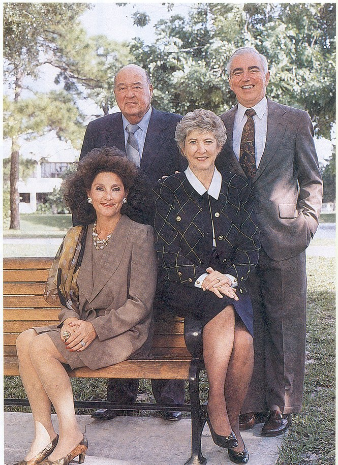

Two Lives Before Boca Raton
Eugene
Born in Kansas City, Missouri, in 1918, Eugene flew for Trans World Airlines from 1944 to 1947 before entering the insurance business, taking over his uncle's Kansas City company and later serving nearly three decades as president of Universal Underwriters Insurance Company. In 1978 he founded LIG Insurance Agency in Boca Raton, the company that became today's Lynn Insurance Group.
Christine
Trained as a registered and surgical nurse in Oslo, Norway, graduating in 1969, Christine spent the following decade working in Norwegian hospitals and eventually as head nurse aboard a Norwegian cruise ship.

Eugene and Christine with Donald and Helen Ross on the Lynn University campus
Photo courtesy of Lynn University Archives